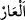

onlar benim düşmanımdır...” (eş-Şuarâ, 26/77) âyetinde geçen “__WORD__ kelimesi de
bunun gibi çoğul mânâsı ifâde eden bir cins isimdir.
el-Müfredât’ta der ki: “__WORD__, körpe çocuk demektir. “__WORD__ ise (çağrılmadan)
dâvetlere giden adam demektir.
Molla Fenârî’nin Fâtiha Sûresi Tefsîri’nde denilmiştir ki: “Çocuğun doğup ses
çıkarmaya başlamasından altı yaşını dolduruncaya kadar geçen zaman tıfıllık
dönemidir.”
Avret, insanın gözükmesi yasak olan yerleri demektir. Avret kelimesinin bu mânâya
kullanılması kinâye yoluyladır. Aslı “__WORD__ kelimesindendir. Çünkü bu gibi gizli kalması
gereken yerlerin gözükmesiyle insan utanır, kınanır; âr hayâ eder. Bu sebeple kadınlar
“avret” diye isimlendirilmiştir. Kötü söz mânâsına gelen “__WORD__ da âr kelimesinden
alınmıştır. Nitekim el-Müfredât’ta böyle denilmektedir.
Fethu’l-karîb’de der ki: Avret, görününce utanılacak her şeydir. Bir hadiste: “Kadın
avrettir. Bizzat kendisi kendisini avret yapmıştır. Çünkü avret yeri görününce
utanıldığı gibi kadın da görününce ondan utanılır, çekinilir.”[153] buyrulmuştur.
Lügat âlimleri demişlerdir ki: Avret, gözükmesinin çirkinliği ve gözleri ona
bakmaktan korunduğu için avret diye isimlendirilmiştir. Eksiklik, ayıp ve çirkinlik
anlamlarına gelen “__WORD__ kelimesinden alınmıştır. Gözün kusurlu olması; yâni şaşı veya
kör olması da bu kelime ile ifâde edilir.
Fakir (Bursevî) der ki: Yedi yaşını geçmiş çocukları kadınlarla beraber bulunmaktan
men’etmek gerekir. Çünkü yedi yaşını doldurmuş çocuklar şehvet duymasalar da neyin
ne olduğunu fark ederler. Bununla birlikte henüz ergenlik çağına ulaşmadığı halde
şehveti kabaran çocuklar da vardır. Dolayısıyla bunların kadınlarla karışık
bulunmasında hayır yoktur.
Mültekatu’n-Nâsırî’de der ki: “Bir çocuk adam olma yaşına ulaşır ve yüzündeki
çocukluğa âid güzellik kaybolursa erkekler hükmüne dâhil olur. Eğer yüzündeki o
güzellik kaybolmazsa kadınlar hükmüne dâhil olur. Böyle bir çocuk başından ayağına
kadar avret olup ona şehvetle bakmak helâl değildir. Fakat şehvet korkusu olmaksızın
onlara bakmakta ve selâm vermekte bir beis yoktur. Bu sebeple onlara yüzlerini
örtmeleri emredilmemiştir.
Hikâye olunduğuna göre âlimlerden biri öldü. Sonra da rüyâda yüzü simsiyah olarak
görüldü. Sebebi sorulunca şöyle dedi: “Falan yerde bir çocuk görmüştüm, ona dikkatle
baktım. Bu yüzden yüzüm cehennemde yandı.”
Kâdî, İmam (Râzî)’nin şöyle dediğini işittiğini nakleder: “Her kadınla birlikte iki
şeytan, her tüysüz oğlanla birlikte ise on sekiz şeytan bulunur.”
Çocuklarla ve sefihlerle çok oturup sohbet etmek mekruh sayılmıştır. Çünkü bu,
insandaki heybeti, mehâbeti giderir. Nitekim el-Bostân’da böyle geçmektedir. Envâru’l-
meşârık’da der ki: “Şehvetle olsun veya olmasın, fitneden korkulsun ya da korkulmasın
erkeklerin güzel yüzlü tüysüz gençlere bakmaları haramdır. Hamamdaki kimsenin